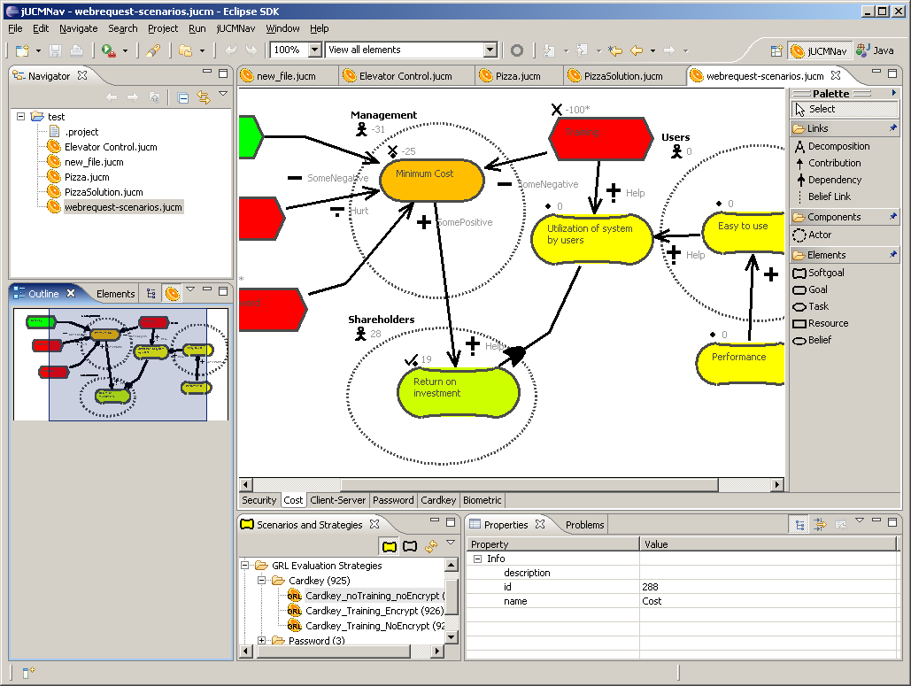
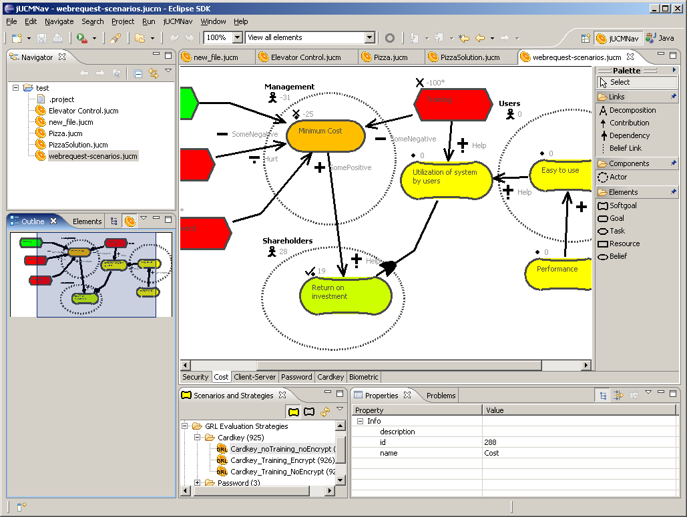

Expression := Implication
Implication := Disjunction (Implies Disjunction)*
Disjunction := Conjunction ((Or | Xor ) Conjunction)*
Conjunction := Comparison (And Comparison)*
Comparison := BooleanUnit ((Equals| NotEquals) BooleanUnit)*
Negation := Not BooleanUnit
BooleanUnit := Negation | RelationalExpression | BooleanConstant
RelationalExpression := AdditiveExpression ((GreaterThan | GreaterOrEqualTo | LowerThan | LowerOrEqualTo) AdditiveExpression)?
AdditiveExpression := MultiplicativeExpression ((Addition | Substraction) MultiplicativeExpression)*
MultiplicativeExpression:= UnaryExpression (Multiplication UnaryExpression)*
UnaryExpression := (Addition | Substraction)? ("(" Expression ")" | IntegerConstant | Identifier )
And := "and" | "&&"
Or := "or" | "||"
Xor := "xor" | "^"
Implies := "=>"
Equals := "=" | "=="
NotEquals := "not" | "!"
Not := "/=" | "!="
GreaterThan := ">"
GreaterOrEqualTo := ">="
LowerThan := "<"
LowerOrEqualTo := "<="
Addition := "+"
Substraction := "-"
Multiplication := "*"
IntegerConstant := ["0"-"9"]+
BooleanConstant := "true" | "false"
Identifier := ["_","a"-"z","A"-"Z"](["_","a"-"z","A"-"Z", "0"-"9"])*
ResponsibilityAction := Statement+
Statement := Assignment | CompoundStatement | IfStatement
Assignment := Identifier AssignmentOperator Expression StatementTerminator
CompoundStatement := "{" Statement* "}"
IfStatement := If Expression Statement (Else Statement)?
AssignmentOperator := "=" | ":="
If := "if"
Else := "else"
StatementTerminator := ";"
 
